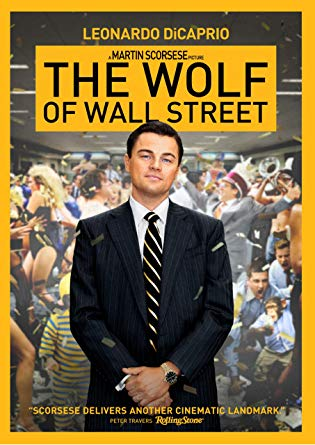

Home
Contact
Resume
My Hobby: Powerlifting
My Favorite Band: The Black Keys
My Favorite Dog: Black Labrador
My Favorite Movie: The Wolf of Wall Street
My Car: 2012 Ford Focus
My Goals
My Availability
The Wolf of Wall Street is a 2013 American biographical black comedy[3] crime film directed by Martin Scorsese and written by Terence Winter, based on the memoir of the same name by Jordan Belfort. It recounts Belfort's perspective on his career as a stockbroker in New York City and how his firm, Stratton Oakmont, engaged in rampant corruption and fraud on Wall Street, which ultimately led to his downfall. Leonardo DiCaprio, who was also a producer on the film, stars as Belfort, with Jonah Hill as his business partner and friend, Donnie Azoff; Margot Robbie as his wife, Naomi Lapaglia; and Kyle Chandler, as the FBI agent, Patrick Denham, who tries to bring him down. Matthew McConaughey, Rob Reiner, Jon Bernthal, Jon Favreau, Joanna Lumley, and Jean Dujardin also star. The film marks the director's fifth collaboration with DiCaprio, after Gangs of New York (2002), The Aviator (2004), The Departed (2006) and Shutter Island (2010), as well as his second collaboration with Winter, since the television series Boardwalk Empire (2010–14).
